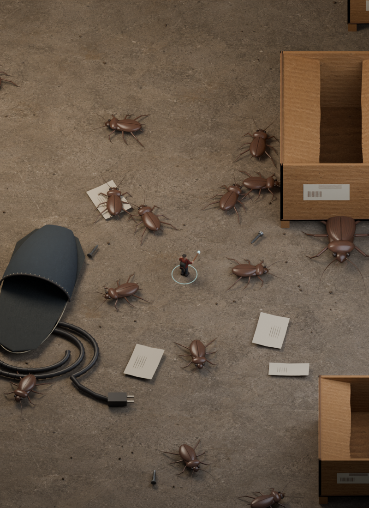
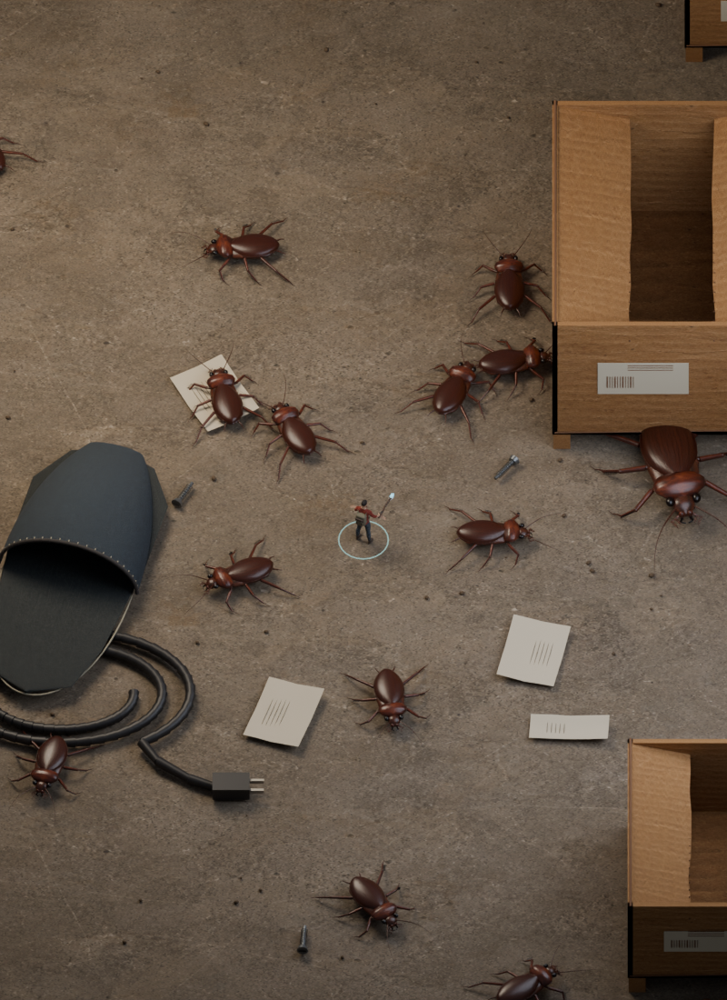
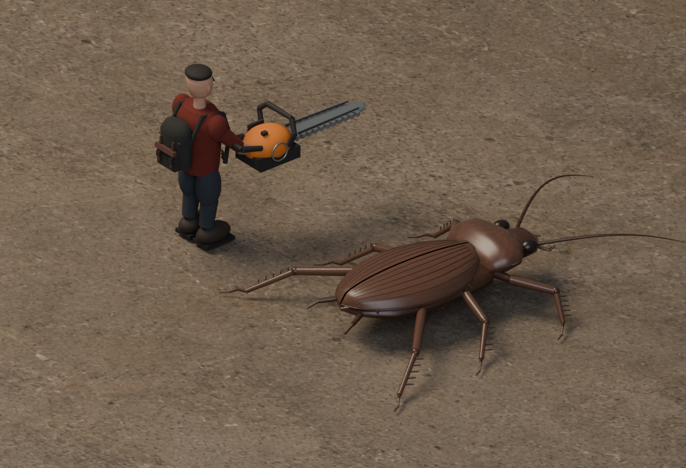
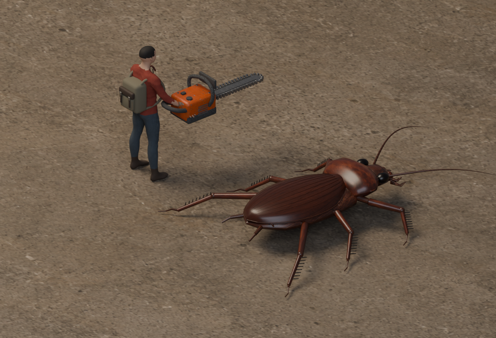
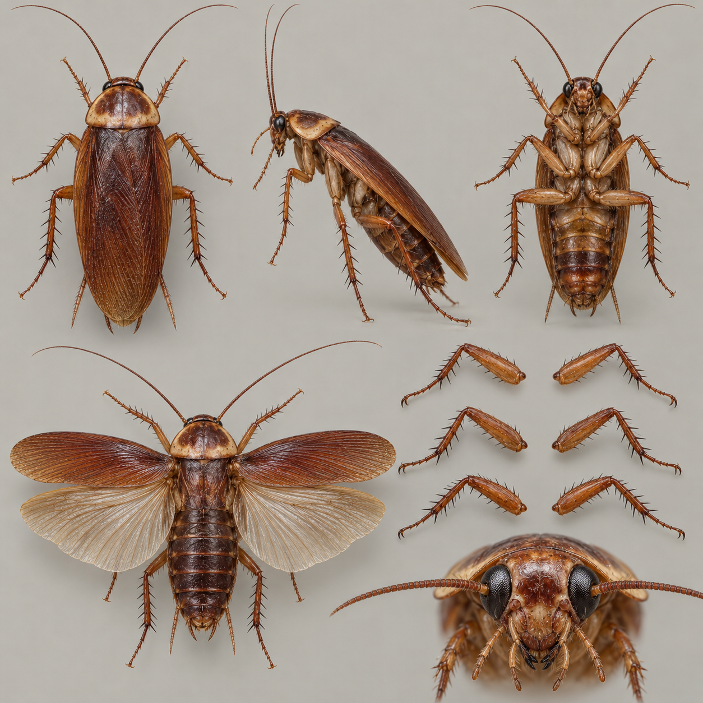
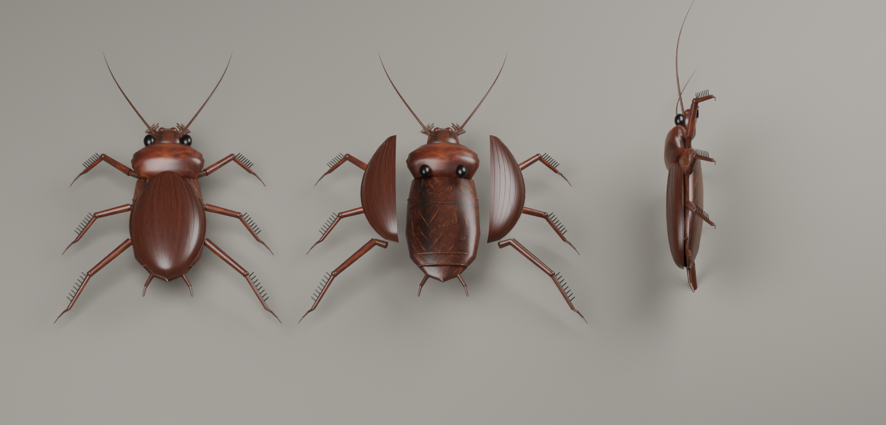

网格、材质与声音，一起检查。
这一版接入 CC0 人体网格、分区甲壳贴图和八种重新制作的武器。下面的前后图来自上一版与本版的实际游戏网格，使用同一台离线相机。
这是统一机位与光照的离线建模对照，非网页实机截图。当前检查浏览器缺少 WebGL 2，网页渲染和手机帧率尚未得到视觉验证。
01 · 房间与整体材质
拖动滑杆，在相同构图里检查变化。


上一版本版蟑螂
甲壳、翅膜、腹节、足部分别映射图集；补充交叉翅脉、口器和触角分节。每个可破坏部位仍使用自己的三维网格。
人物与道具
CC0 人体网格保留自然的人脸与手指拓扑，重新制作衣物、背包和头发。八种武器加入倒角、机械结构及烤漆、拉丝钢、橡胶、木纹贴图。
空间与杂物
拖鞋有真实开口、内衬和缝线；纸箱有内壁、折盖和瓦楞断面；加入电线插头、螺丝螺纹和翘起的碎纸。
02 · 人物、蟑螂与电锯近景


上一版本版03 · 建模参考与实际拆解
第一张是生成的多视图参考；第二张是本版游戏网格的离线拆解渲染，两者分开标明。
查看生成的多视图参考


04 · 试听与失败演出
八种武器各有三种命中变体，另有断裂、暴击、持续电锯和喷雾声。配乐为原创 80 秒循环，游戏按生命与战场密度混入紧张层。
人体核心资产来源：MakeHuman / CC0。蟑螂和武器网格为本项目制作；贴图与失败关键帧为生成素材；音乐与音效为本项目合成制作。
对照只评估造型和静态材质。网页中的打击闪光、冻结、燃烧、镜头震动和动画不由这组离线图验证。六足、左右翅鞘和眼部仍保留独立破坏模型；26 项原有原生引擎玩法检查通过。